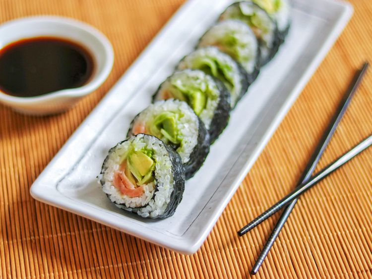

Home
Smoked Salmon Sushi Roll

Description
Making these salmon rolls is fairly simple. We will need to prepare the rice, then assemble the rolls and cut them into pieces to finish!
Ingredients
- Sushi Rice
- Rice Wine Vinegar
- Seaweed
- Wasabi Paste
- Smoked Salmon
- Cucumber
- Avocado
Steps
- Soak and cook the rice, then mix in the vinegar and cool in an even layer on the plate
- Assemble the sushi rolls
- Roll the sushi tightly and cut into eight pieces